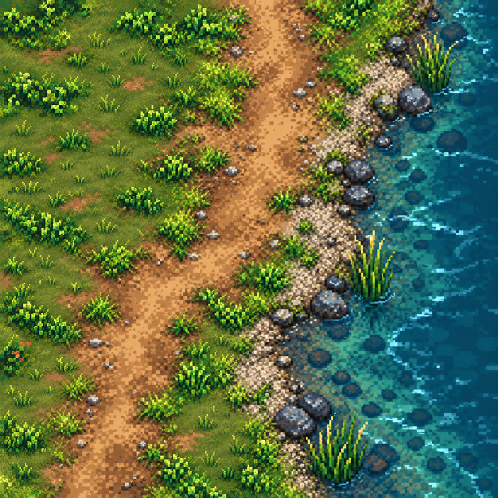
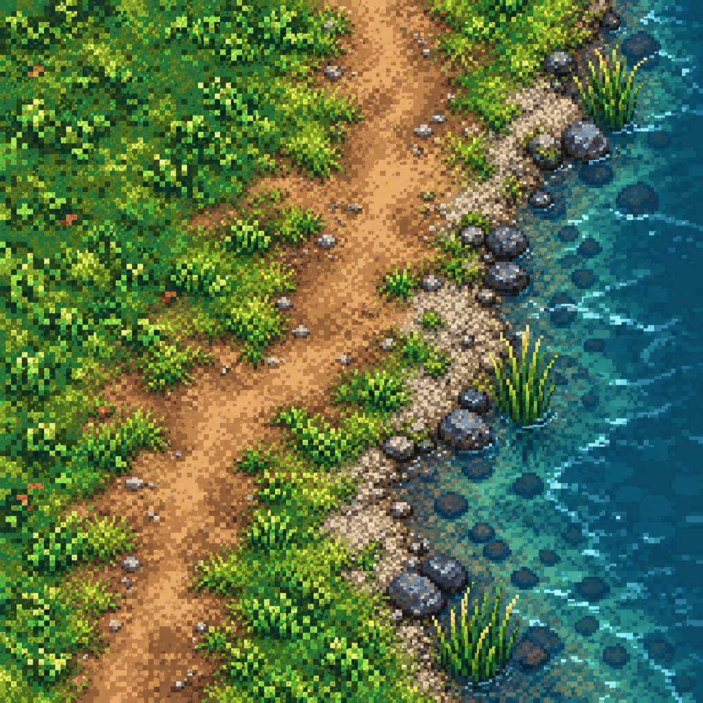

הגדה בדרך למזח — חומרים ומעברים
שני סבבי ליטוש בתוך כיוון RICH. הדוגמאות מוצגות ברוחב של עד 390 פיקסלים לבדיקת קריאות; זו הדמיית חומרים שנוצרה באמצעות imagegen, ולא צילום מתוך המשחק או ערכת אריחים מוכנה.

B — לאחר ליטוש צפיפות הדשא. כתמים שקטים מפנים מקום לקבוצות עשב מפורטות. השביל והמעבר למים נשמרו.
A — הסבב הראשון. החומרים מובחנים, אבל הדשא עמוס כמעט באותה מידה בכל השטח.מה לוקחים לפירוק לאריחים
- דשא קצר שקט, דשא צפוף וכתמי שחיקה — משפחה אחת עם צפיפויות שונות.
- אדמה דרוכה באמצע הדרך, ושוליים שבהם עשב וגרגרים משתלבים.
- חצץ יבש, אבן לחה וקו מים רדוד — חומרים נפרדים עם מעבר הדרגתי.
- קני סוף וקבוצות אבנים כשכבת פרטים נפרדת, כדי שלא יחזרו בכל אריח.
מה עדיין לא הוכח
הדוגמה אינה ערכת אריחים מחזורית ואינה מיובאת לפלטת המשחק. חיבורי קצוות, קנה המידה לצד דמות והקריאות בזמן תנועה ייבדקו בהרכבה מתוך אריחי 64×64. במיוחד: לפרק את שורת האבנים הרציפה ולבדוק שעושר המים אינו מתחרה בדמות.
הצבת הגדה כאן היא בדיקת חומרים בלבד; היא אינה משנה את תכנון העולם, המזח או נתיבי הגישה. שתי התמונות נוצרו בכלי image_gen.imagegen. הנחיות הציור והביקורת: סבב A · סבב B.